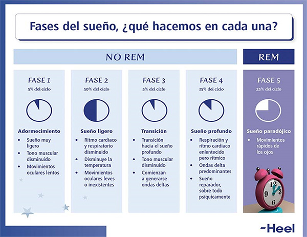
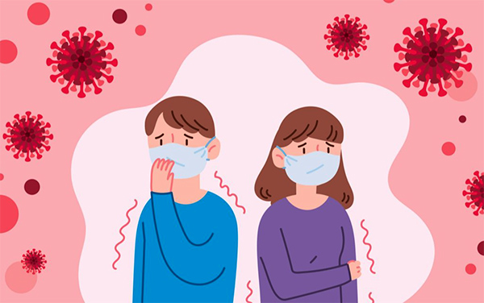

Farmacia Asistencial y COVID-19 Efectos colaterales
Insomnio
La pandemia por coronavirus 2019 (COVID-19) es una emergencia de salud pública con impactos significativos en la salud mental de la población general. Tanto estudios en epidemias anteriores como los que se han desarrollo a la fecha evidencian una amplia gama de consecuencias psicosociales y múltiples síntomas psicológicos, dentro de los cuales resaltan las alteraciones en el patrón de sueño, de forma consistente en las publicaciones se ha registrado que cerca de una tercera parte de las personas que vivencian el aislamiento social presentan insomnio, siendo éste un predictor importante para el desarrollo de perturbaciones mentales con gran compromiso en la funcionalidad como trastornos de ansiedad, depresión y estrés postraumático.
¿Qué es el Insomnio?
El insomnio es una dificultad para iniciar y/o mantener el sueño, o la sensación de no haber dormido un sueño reparador. Así pues, se trata de un problema de disminución de la cantidad y/o calidad del sueño. Se considera que si una persona tarda más de 30 minutos en dormirse y/o duerme menos de 6h sufre de insomnio. Si estas sensaciones son inferiores a un mes se habla de insomnio transitorio, y si es superior de insomnio crónico.
Este trastorno del sueño se da en una tercera parte de la población (30%), siendo más frecuente en los ancianos, las mujeres y en personas con enfermedades psiquiátricas. La mayoría de los casos de insomnio tienen un inicio agudo, coincidiendo con situaciones de estrés, y tienden a cronificarse en el 60 % de los casos.
El sueño es necesario para el buen estado físico y mental del individuo. Existe una relación bidireccional entre el sueño y la salud. Numerosos estudios demuestran que el insomnio tiene efectos negativos en la salud mental, la salud física, la calidad de vida, el rendimiento laboral, la autoestima y el gasto sanitario.
Las causas más frecuentes de insomnio son las alteraciones emocionales de carácter reactivo y las enfermedades psiquiátricas. En general, todas aquellas situaciones del individuo que se acompañan de intensa ansiedad, preocupación, tensión psíquica, angustia, miedo o tristeza.
¿Qué factores influyen en el ciclo del sueño?
El ciclo sueño vigilia está supeditado a múltiples factores, principalmente a la exposición a la luz diurna y la oscuridad nocturna, esta última incrementa los niveles de melatonina, hormona que juega un rol clave en la regulación e inicio del sueño.
Otros factores implicados son los horarios de las comidas y la actividad física diurna.
Altos niveles de actividad debido al estrés, sobrecarga de trabajo o ejercicio intenso nocturno afectan de forma negativa el patrón de sueño.
El estrés implica una mayor activación psicológica y fisiológica, y se conoce que el aumento en la función del eje hipotalámico-hipofisario-adrenal (HHA) se asocia con un sueño acortado y fragmentado, con una posible reducción en la tercera etapa de sueño. A su vez un sueño acortado provoca aumentos en los niveles de marcadores relacionados con el estrés como el cortisol y, por lo tanto, los trastornos del sueño resultantes pueden llevar a una mayor activación del eje HHA, exacerbando los efectos del estrés promoviendo así un círculo vicioso entre el estrés y el insomnio.
Una alteración en el patrón de sueño puede tener consecuencias directas sobre el funcionamiento emocional del día siguiente, de manera que el insomnio puede aumentar los niveles de ansiedad. Y como consecuencia la ansiedad aumenta el insomnio
¿Como se relacionan la COVID-19 y el insomnio?
La exposición a una situación estresante sin precedentes como representa la actual pandemia puede hacer que la mayoría de los individuos experimenten con mayor probabilidad ansiedad, depresión e interrupciones en el patrón de sueño. La preocupación por el estado de salud, la incertidumbre laboral, las dificultades económicas generadas, la dificultad de conciliar trabajo y familia, pueden provocar ansiedad, insomnio y altos niveles de estrés.
Estudios previos sobre el aislamiento social y el impacto tanto en el bienestar psicológico como en la calidad del sueño han resaltado el papel de los siguientes factores: disminución en la exposición a la luz solar, cambios en la dieta, la temperatura ambiental por el confinamiento, la reducción de la interacción social, trabajar más horas bajo circunstancias estresantes y vivir con incertidumbre e inseguridad sobre el estado de salud.
Aunque son pocos los estudios realizados hasta la fecha sobre los efectos en la salud mental de la población general relacionados a la actual pandemia de COVID-19, los que se conocen han dimensionado un gran impacto con importantes aumentos de síntomas relacionados al estrés, ansiedad, depresión, insomnio, irritabilidad y miedo.
Un estudio en personas (9) (n=1210) durante el brote de COVID-19 reportó que más del 50% de los encuestados informaron un impacto psicológico moderado o severo en el sueño. Se ha propuesto el término coronasomnia para esta alteración de la calidad y cantidad del sueño secundario a esta pandemia.
Una encuesta realizada en China entre el 5 y el 19 de febrero del 2020(10), (n=3637), evaluó de forma retrospectiva las alteraciones del sueño, principalmente el insomnio antes del brote de COVID-19 mediante el uso del ISI (Índice de Severidad del Insomnio). En la misma encuesta se evaluó los síntomas correspondientes durante el brote COVID-19 (después del 21 de enero de 2020, día de corte que confirmó la transmisión de persona a persona del COVID-19 e iniciaron los confinamientos). En este estudio se reporta que durante el brote de COVID-19 comparado con lo informado de forma retrospectiva, la prevalencia de insomnio aumentó significativamente (ISI>7, 26.2% vs. 33.7% respectivamente), el 13.6% de los participantes desarrollaron insomnio de Novo y el 12.5% presentó empeoramiento de los síntomas de insomnio basados en ISI.
Además, la duración del tiempo en cama aumentó (485.5 minutos antes del brote vs. 531.5 minutos durante el mismo) y el tiempo total de sueño (432.8 minutos antes del brote vs. 466.9 minutos durante).
El estrés derivado de la crisis sanitaria y económica favorece la demanda de los productos para dormir, los cuales se mantienen como una de las clases que más aporta al crecimiento del sector de productos CH (+1,3M€ en julio 2020).
Consejos a personas que sufren de insomnio
Con el objetivo de mantener la calidad del sueño…
- En lo posible obtener luz natural durante el día, particularmente en horas de la mañana durante al menos 30 minutos. Si no es posible, mantener la casa bien iluminada durante el día, abriendo cortinas y persianas.
- Conservar un horario para despertarse y acostarse, el orden en los horarios ayuda a regular el sueño.
- No realizar actividades estresantes y/o adrenalínicas en las horas previas a acostarse.
- Realizar actividad física regularmente, preferiblemente a la luz del día, pero no realizar actividad intensa en las horas previas a acostarse.
- Evitar hacer siestas largas durante el día. Una siesta de 15-20 minutos es suficiente.
- Realizar actividades relajantes antes de acostarse: por ejemplo, leer un libro, escribir un diario, hacer yoga o relajación, etc. De esta forma la mente estará más en calma y preparada para dormir.
- Realizar una cena ligera máximo 2 horas antes de disponerse a dormir, y evitar la ingesta de bebidas con cafeína, tabaco y alcohol en la noche.
- Irse a la cama solo cuando sienta sueño. Si tras media hora en la cama sigue despierto, es mejor levantarse y realizar alguna actividad relajante hasta recuperar el sueño.
- Es muy importante no llevar dispositivos electrónicos al dormitorio. Se deben apagar antes de acostarse con la finalidad de reducir interrupciones debido a exposición de la luz, notificaciones y la necesidad de responder a solicitudes.
- Recomendación farmacéutica sobre el uso de complementos alimenticios, una alternativa no farmacológica, con extractos de origen natural, como Dormax que contiene melatonina que ayuda a reducir el tiempo necesario para conciliar el sueño, valeriana, pasiflora y amapola que contribuye a afrontar con calma el estrés.
Bibliografía
- Consejos para combatir el insomnio y sus consecuencias. Sociedad Española de Farmacia Familiar y Comunitaria.
- Altena E, Baglioni C, Espie CA, Ellis J, Gavriloff D, Holzinger B, et al. Dealing with sleep problems during home confinement due to the COVID-19 outbreak: practical recommendations from a task force of the European CBT-I Academy. J Sleep Res. 2020 Apr 4;
- Akerstedt T. Psychosocial stress and impaired sleep. Vol. 32, Scandinavian Journal of Work, Environment and Health. Finnish Institute of Occupational Health; 2006. p. 493–501
- Zhang C, Yang L, Liu S, Ma S, Wang Y, Cai Z, et al. Survey of Insomnia and Related Social Psychological Factors Among Medical Staff Involved in the 2019 Novel Coronavirus Disease Outbreak. Front Psychiatry. 2020 Apr 14;11.
- Ramirez-Ortiz, J.; Castro-Quintero, D.; Lerma-Cordoba, C.; Yela- Ceballos, F.; Escobar-Cordoba F. Consequences of the COVID-19 pandemic in mental health associated with social isolation. SciELO Prepr. 2020;1–21.
- Riemann D, Baglioni C, Bassetti C, Bjorvatn B, Dolenc Groselj L, Ellis JG, et al. European guideline for the diagnosis and treatment of insomnia. J Sleep Res. 2017 Dec 1;26(6):675–700.
- Sivertsen B, Hysing M, Dorheim SK, Eberhard-Gran M. Trajectories of maternal sleep problems before and after childbirth: A longitudinal population-based study. BMC Pregnancy Childbirth. 2015 Dec 12;15(1).
- Documento oficial de la Sociedad Española de Sueño. Rev Neurol, 63(Suplemento 2), S1-S27.
- Wang C, Pan R, Wan X, Tan Y, Xu L, Ho CS, et al. Immediate psychological responses and associated factors during the initial stage of the 2019 coronavirus disease (COVID-19) epidemic among the general population in China. Int J Environ Res Public Health. 2020 Mar 1;17(5).
- Li Y, Qin Q, Sun Q, Sanford LD, Vgontzas AN, Tang X. Insomnia and psychological reactions during the COVID-19 outbreak in China. J Clin sleep Med JCSM Off Publ Am Acad Sleep Med. 2020.
- Datos IQVIA Sell-ou

{kind=link}